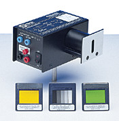
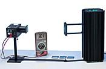

Efter att Herz hade skrivit om solljusets effekt på gnistlängder, upptäckte år 1888 Hallwachs att UV-ljus urladdar negativt laddade zinkplattor. Noggranna mätningar i vakuum visade:
Om ljuset enligt Maxwell ska beskrivas som en elektromagnetisk vågrörelse, förväntar man sig att det elektriska fältets amplitud påverkar elektronernas energi. Men så är alltså inte fallet. Einstein löste problemet genom att (i Plancks fotspår) anta att ljuset avger energi i små paket (kvanter) med energi E=hf, där h är Planks konstant av verkan och där f=c/λ är ljusets frekvens. För att en elektron ska lämna materialet krävs det en minimum energi, utträdesarbetet Wf , olika för olika metaller. De snabbaste elektronernas kinetiska energi blir då Ekin = hf - Wf .
Hur mäter man nu elektronernas kinetiska energi? Det skulle vara möjligt att mäta elektronernas hastighet, men det är mycket enklare att bestämma den så kallade stoppspänningen. Om anoden är mer positiv än fotokatoden är fotoströmmen oberoende av spänningen, eftersom alla fria elektroner dras dit. Men om anoden är negativ, bromsas elektronerna upp. Långsamma elektroner har då inte tillräcklig kinetisk energi för att nå anoden, och fotoströmmen minskar.
Om spänningen mellan katod och anod är V, är för en partikel med laddning q skillnaden i potentiell energi lika med qV. En elektron har laddning -e = 1,60.10-19 C. Genom att mäta stoppspänningen, har man då bestämt de snabbaste elektronernas kinetiska energi i enheten eV (elektronvolt). Om man mäter stoppspänningen för några olika våglängder, kan man ur en graf av stoppspänning mot ljusets frekvens bestämma Plancks konstant i enheter eV·s. Det är alltså h/e.
|  | Med vår fotocell (Pasco) kan vi inte mäta fotoströmmen. Istället laddar fotocellen upp en kapacitans. När strömmen blir noll, är spänningen över kapacitansen lika med stoppspänningen. En OP-förstärkare ansluten som följare buffrar spänningen så att den kan mätas utan att urladda kapacitansen. Det betyder också att spänningen avtar mycket långsamt när man stängar av ljuset eller använder en längre våglängd. Därför finns det en Reset-knapp så att kapacitansen kan urladdas. |
|  | Vi använder en kviksilverlampa. De viktigaste linjerna i ett Hg-spektrum har våglängder 578 nm (två gula linjer), 546,1 nm (grön), 435,8 nm (blå) 404,7 nm (violet) och 365,5 nm (ultraviolet). Linjerna skiljs av ett diffraktionsgitter och fokusseras på en spalt i en skärm. Eftersom skärmen innehåller ett fluorescerande ämne, kan man även lätt ställa in fotocellen på denna annars osynliga linje. Obligatorisk förberedelseuppgift: räkna ut de olika Hg-linjernas frekvens i hertz. |
Det finns två experiment. Instruktioner delas ut på laborationen. De kommer ur Pasco's handledning.
{kind=link}